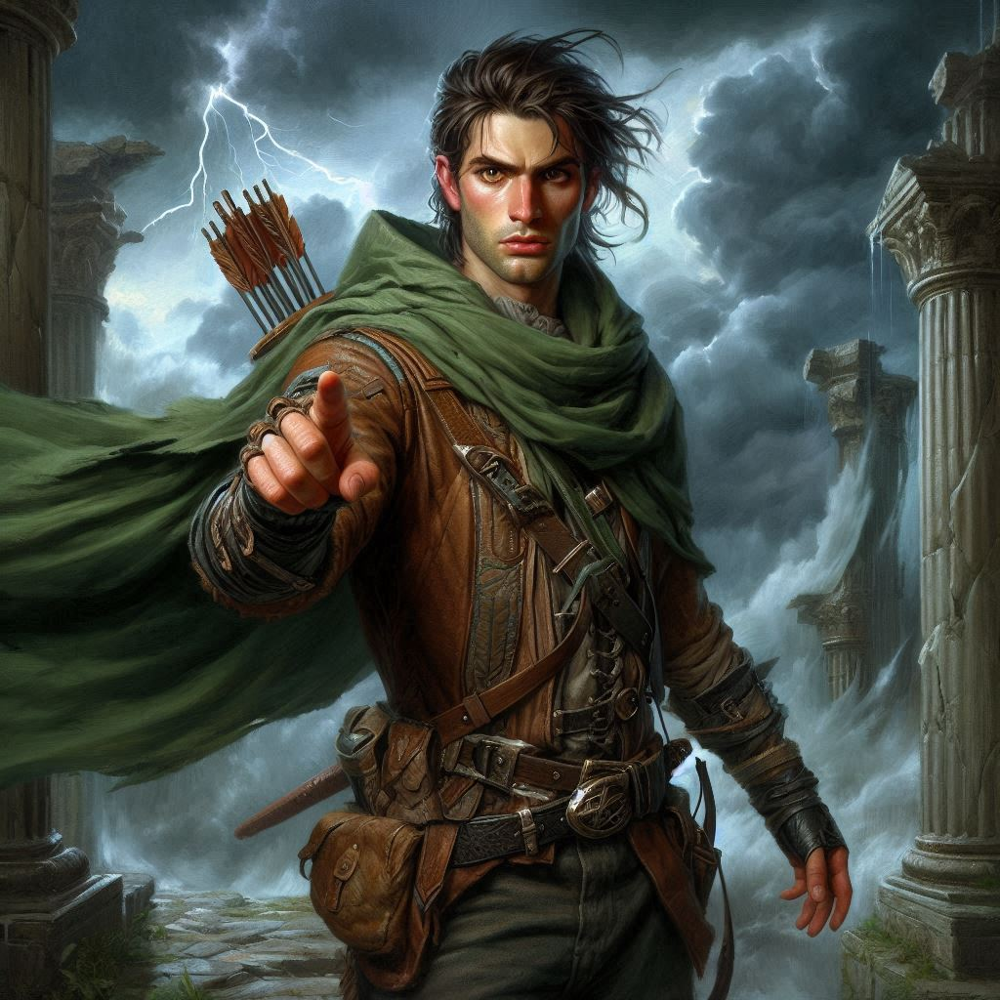
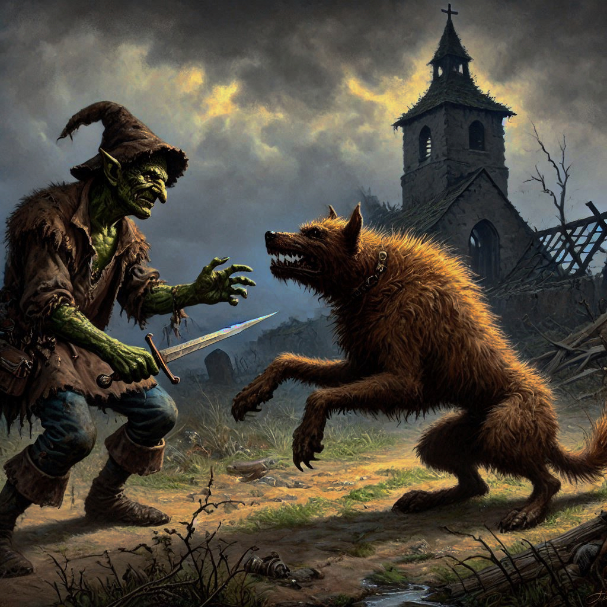

The Hag and the Hound
The moment you decide to trust the goblin, a knot tightens in your chest. Shamurel's sly grin flickers in the dim light of the temple, and Elias shoots you a sidelong glance, clearly uneasy. But you’ve come too far, and Baider’s life hangs in the balance. You can't afford to hesitate now. You nod to Shamurel, who, with surprising speed, scurries ahead, beckoning you and Elias to follow.
The Shadow Realm presses in on all sides as you walk. The world around you is dark, not with the simple absence of light, but with a suffocating presence, as if the shadows are alive and watching. The sky, or what you assume is the sky, roils with clouds that gleam faintly, casting everything in an eerie glow. In the distance, you can see jagged peaks—Umbra’Thal, the dark kingdom. That’s where Baider and Onyx are. You clench your fists, your mind focused on one thing: getting to them.
“Keep close,” Shamurel warns, his voice barely a whisper. “This place is crawling with Varis’ dark elves, and worse.” His wide, gleaming eyes dart around nervously. “We goblins know how to slip through the cracks.”
Elias draws closer to you as the path narrows, his hand brushing yours briefly before he pulls away. “I don’t trust him,” he murmurs, nodding toward Shamurel. You catch the concern in his voice, but you say nothing. Trusting a goblin wasn’t part of the plan, but here you are.
You press on, keeping your eyes peeled. Soon, the stench of decay reaches your nose, growing stronger with each step. The path opens into a vast, desolate clearing. The ground is barren, scattered with bones. At the far end of the clearing, you spot a hunched figure—an old hag. Her gnarled fingers clutch a staff twisted like a dead tree, and beside her, a monstrous hellhound, its eyes glowing red, sniffs the air.
Shamurel freezes. “The Hag of Thorns,” he whispers, his voice tight with fear. “She serves Varis, preys on travelers who dare enter these lands.”
Before you can react, the hag’s head snaps toward you. Her lips curl into a crooked grin, and the hellhound growls, stepping forward, muscles rippling under its mangy fur. “Ah, fresh blood,” she hisses, her voice slithering into your mind. “You’ve wandered far from the light, little ranger.”
You reach for your weapon, but a pulse of dark magic hits you like a wave. Your vision blurs, your knees buckle, and for a moment, everything goes black.
When you blink back into consciousness, you find yourself standing on the edge of a cliff. The sea below churns violently, black waves crashing against jagged rocks. Elias stands at the edge, his back to you, staring into the abyss. You call out to him, but he doesn’t move.
A voice—soft, cold—echoes in your mind. “He doubts you, Kira. Just like everyone else. You’ve been abandoned before, haven’t you? Left behind. Forgotten.”
You shake your head, fighting the voice, but it’s persistent, worming its way into your thoughts. “Elias will leave you too. Just like Jorsh. Like Baider. You’ll be alone again.”
“No!” you shout, forcing the words out. This is the hag’s magic. She’s trying to turn you against Elias. But deep down, the fears she stirs are real. You’ve felt them before. You’ve lived them.
Elias turns slowly to face you. His eyes are cold, distant. “I’ve always been there for you, Kira,” he says, his voice barely above a whisper. “But you never saw me. Not the way I see you.”
“I—" you stammer, the words catching in your throat. “I need you, Elias. I do.”
“Do you?” he asks, stepping closer. His gaze sharpens, and something in his posture changes. The shadows cling to him, making him look taller, more menacing. The abyss calls to him. "You never needed anyone.”
Suddenly, an arrow whistles past your ear, striking the ground near Elias’ feet. The illusion shatters. You blink, and the cliffside vanishes. You’re back in the clearing. The hag cackles, but the laugh cuts off as Shamurel leaps from the shadows, dagger in hand. He slashes at the hellhound, cutting deep into its flank. The beast howls in pain, its glowing eyes turning on the goblin.
“Run!” Shamurel yells, but you can see the struggle in his eyes. He’s buying you time, but at great cost.
Elias snaps out of the enchantment, grabbing your arm. “We have to go, now!”
But the hag is still there, her eyes locked on you. She raises her staff, dark energy swirling around her. Shamurel, bleeding and panting, stands between her and you, barely able to keep the hellhound at bay.
You glance at Elias, then back at Shamurel. The goblin is risking his life, but there’s no telling how long he’ll hold out.
Shamurel meets your gaze, and for a fleeting moment, you see something in his eyes—determination, maybe even honor. “I can hold her off,” he growls. “Get to Umbra’Thal. Save your friends.”
The words echo in your mind as you weigh your options. You could stay and help Shamurel, but that would risk everything. On the other hand, letting him sacrifice himself might be the only way to save Baider and Onyx.
The wind howls through the clearing, carrying with it the scent of death and the weight of your decision.